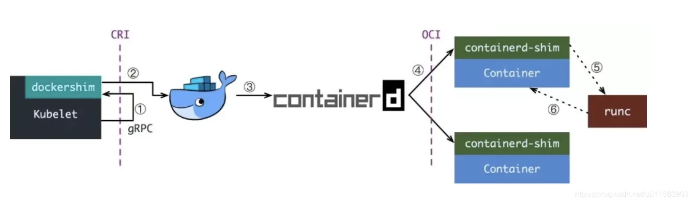
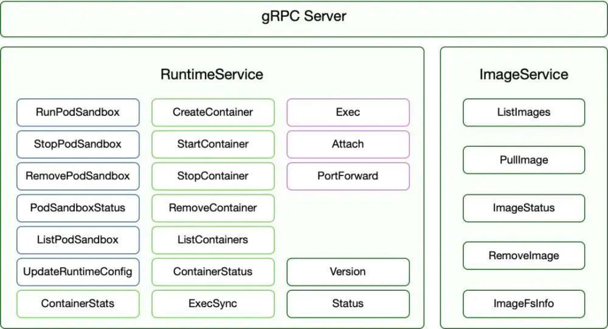
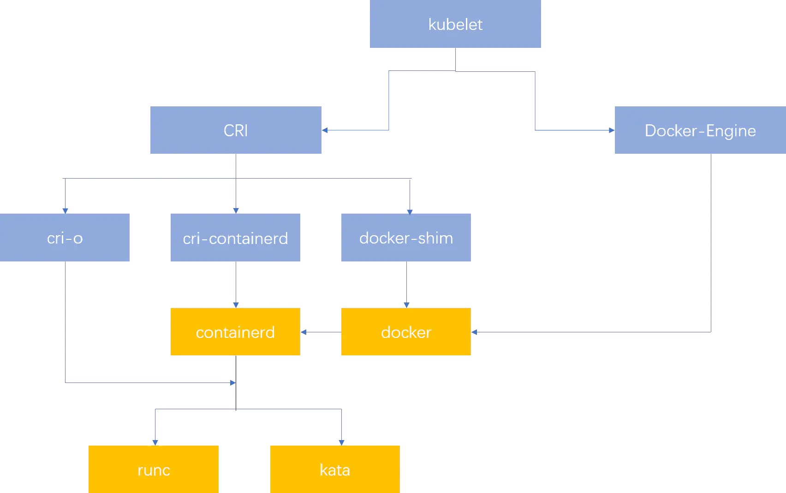
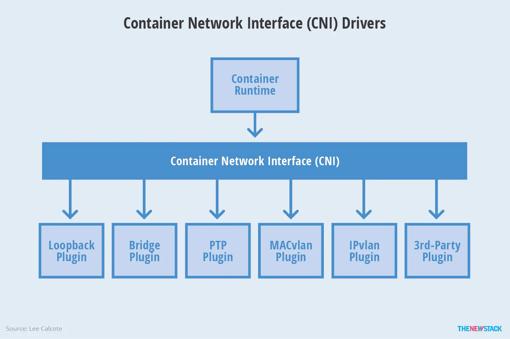

Travis
Friday, March 25, 2022
K8s
https://www.jianshu.com/p/c7748893ab00
oci 标准 runtime-spec image-spec 这两个标准通过OCI runtime filesytem bundle的标准格式连接在一起,OCI镜像可以通过工具转换成bundle,然后 OCI 容器引擎能够识别这个bundle来运行容器
容器镜像标准(image-spec) 文件系统: 以layer保存的文件系统,每个layer保存了和上层之间变化的部分,layer应该保存哪些文件,怎么表示增加、修改和删除的文件等 config文件: 保存了文件系统的层级信息(每个层级的hash值,以及历史信息)以及容器运行时需要的一些信息(比如环境变量、工作目录、命令参数、mount 列表) manifest文件: 镜像的config文件索引,有哪些layer,额外的annotation信息,manifest文件中保存了很多和当前平台有关的信息 index文件: 可选的文件,指向不同平台的manifest文件,这个文件能保证一个镜像可以跨平台使用,每个平台拥有不同的manifest文件,使用index作为索引
容器运行时标准(runtime spec)
容器的状态包括如下属性
ociVersion: OCI版本 id: 容器的ID,在宿主机唯一 status: 容器运行时状态,生命周期 creating: 使用 create 命令创建容器,这个过程称为创建中,创建包括文件系统、namespaces、cgroups、用户权限在内的各项内容 created: 容器创建出来,但是还没有运行,表示镜像和配置没有错误,容器能够运行在当前平台 running: 容器的运行状态,里面的进程处于up状态,正在执行用户设定的任务 stopped: 容器运行完成,或者运行出错或者stop命令之后，容器处于暂停状态,这个状态,容器还有很多信息保存在平台中,并没有完全被删除 pid: 容器进程在宿主机的进程ID bundle: 容器文件目录,存放容器rootfs及相应配置的目录 annotations: 与容器相关的注释
containerd containerd是一个简单的守护进程,它可以使用runC管理容器，使用gRPC暴露容器的其他功能. 相比较Docker引擎使用gRPC, containerd暴露出针对容器的增删改查的接口,然而Docker引擎只是使用 full-blown HTTP API接口对Images，Volumes，network，builds等暴露出这些方法
shim containerd-shim进程由containerd进程拉起,即containerd进程是containerd-shim的父进程, 容器进程由containerd-shim进程拉起, 这样的优点比如升级,重启docker或者containerd 不会影响已经running的容器进程, 而假如这个父进程就是containerd,那每次containerd挂掉或升级,整个宿主机上所有的容器都得退出了. 而引入了 containerd-shim 就规避了这个问题(当 containerd 退出或重启时, shim 会 re-parent 到 systemd 这样的 1 号进程上)
runc runC只做一件事情就是运行容器,提供创建和运行容器的CLI(command-line interface)工具, runC直接与容器所依赖的cgroup/namespace linux kernel等进行交互， 负责为容器配置cgroup/namespace等启动容器所需的环境，创建启动容器的相关进程
将容器运行时相关的程序从docker daemon剥离出来，形成了containerd, Containerd向docker提供运行容器的API，二者通过gRPC进行交互, containerd最后会通过runC来实际运行容器

cri
CRI是kubernetes推出的一个标准
kubelet拉起一个容器的过程,如下

Kubelet通过CRI接口(gRPC)调用docker-shim,请求创建一个容器这一步中,kubelet可以视作一个简单的CRI Client,而docker-shim就是接收请求的Server, 注意的是docker-shim是内嵌在Kubelet中的 docker-shim收到请求后,转化成Docker Daemon能听懂的请求,发到Docker Daemon上请求创建一个容器 Docker Daemon请求containerd创建一个容器 containerd收到请求后创建一个containerd-shim进程,通过containerd-shim操作容器,容器进程需要一个父进程来做诸如收集状态, 维持stdin等fd打开等工作 containerd-shim在调用runC来启动容器 runC 启动完容器后本身会直接退出,containerd-shim则会成为容器进程的父进程,负责收集容器进程的状态,上报给containerd

ImageService:负责镜像的生命管理周期
查询镜像列表 拉取镜像到本地 查询镜像状态 删除本地镜像 查询镜像占用空间
RuntimeService:负责管理Pod和容器的生命周期
PodSandbox 的管理接口 PodSandbox是对kubernete Pod的抽象,用来给容器提供一个隔离的环境(比如挂载到相同的cgroup下面)并提供网络等共享的命名空间.PodSandbox通常对应到一个Pause容器或者一台虚拟机 Container 的管理接口 在指定的 PodSandbox 中创建、启动、停止和删除容器。 Streaming API接口 包括Exec、Attach和PortForward 等三个和容器进行数据交互的接口,这三个接口返回的是运行时Streaming Server的URL,而不是直接跟容器交互 状态接口 包括查询API版本和查询运行时状态
container engine cri-o：同时兼容OCI和CRI的容器运行时 cri-containerd：基于Containerd的Kubernetes CRI 实现 rkt：由CoreOS主推的用来跟docker抗衡的容器运行时 docker：kuberentes最初就开始支持的容器运行时，目前还没完全从kubelet中解耦，docker公司同时推广了OCI标准 Kata Containers：符合OCI规范同时兼容CRI gVisor：由谷歌推出的容器运行时沙箱(Experimental)
Orchestration API -> Container API -> Kernel API
Orchestration API: kubernetes API标准就是这层的标准,无可非议 Container API: 标准就是CRI Kernel API: 标准就是OCI


podman